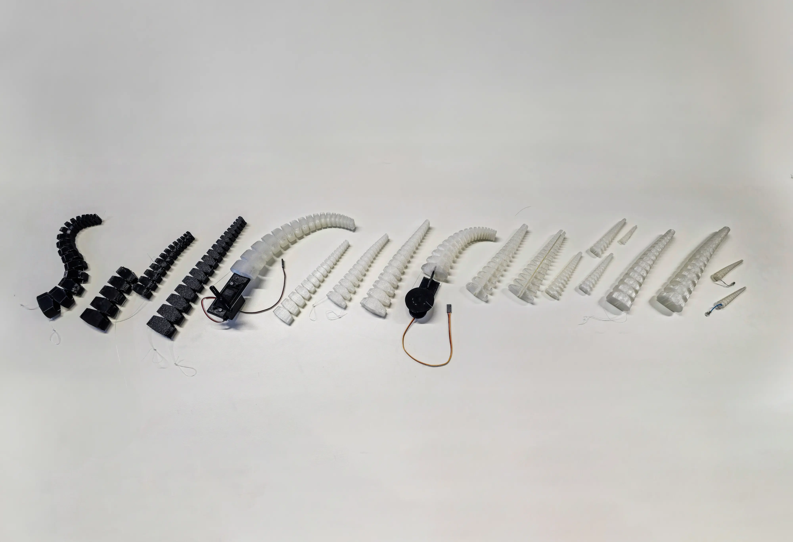
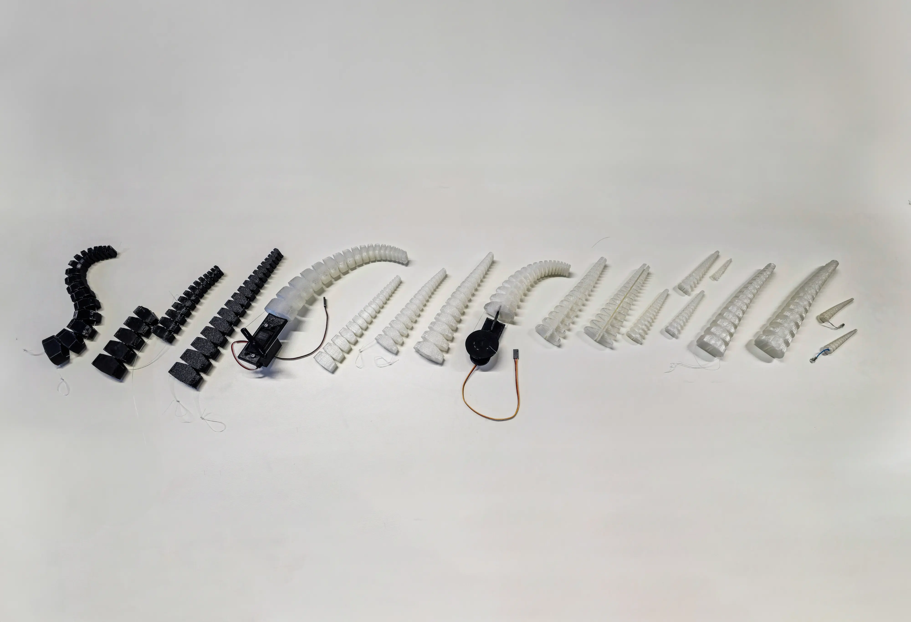

Octoping..
Course: Final Bachelor Project (New Futures)
Supervised by: Dr.ir. Joep Frens
Type: Individual project
Date: January 2025
Duration: ~16 weeks
Significance: Connected devices, Aesthetics of Interaction, Soft Robotics, 3D Printing, Mechatronics, IoT, OOCSI, Psychology, User Testing
Long-distance relationships are often defined by an emotional gap that text messages or video calls can never fully bridge. The lack of physicality, like a hug or a reassuring touch, creates a sense of separation that leaves many couples feeling disconnected. The inability to fully communicate often leads to misunderstandings and petty arguments that could easily be avoided if the couple had a better way to reassure each other and emotionally express themselves.
Octoping is a pair of remotely connected communication devices in the form of expressive octopus companions, designed to help separated long-distance couples spontaneously reach out to (ping) each other and playfully share how they feel, without the need for words. To do so, the project applies recent research in string-actuated compliant mechanical tentacles and explores using this type of soft robotics in a new context of gesture-based communication.
The octopuses are designed to act as if they share a telepathic bond; when one octopus is manipulated, it’s counterpart awakens and mirrors the motions to serve as a medium for emotional expression. The concept emphasizes creativity of expression, allowing couples to discover their own gestures and interactions that reflect their relationship's idiosyncrasies.

 
